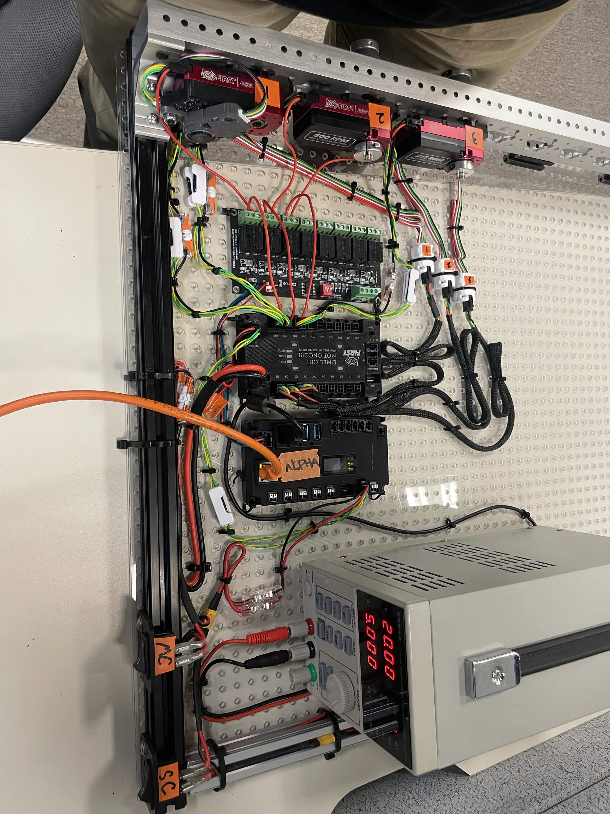
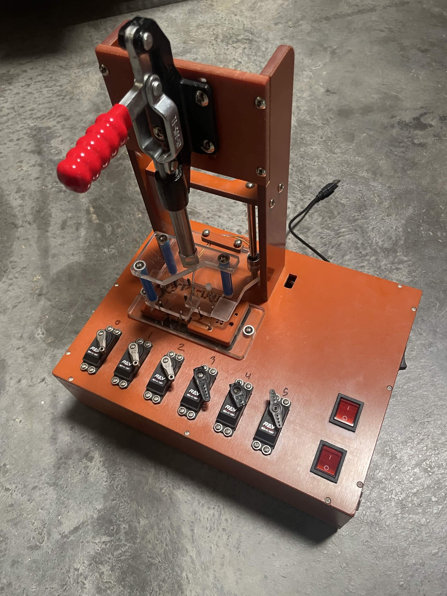
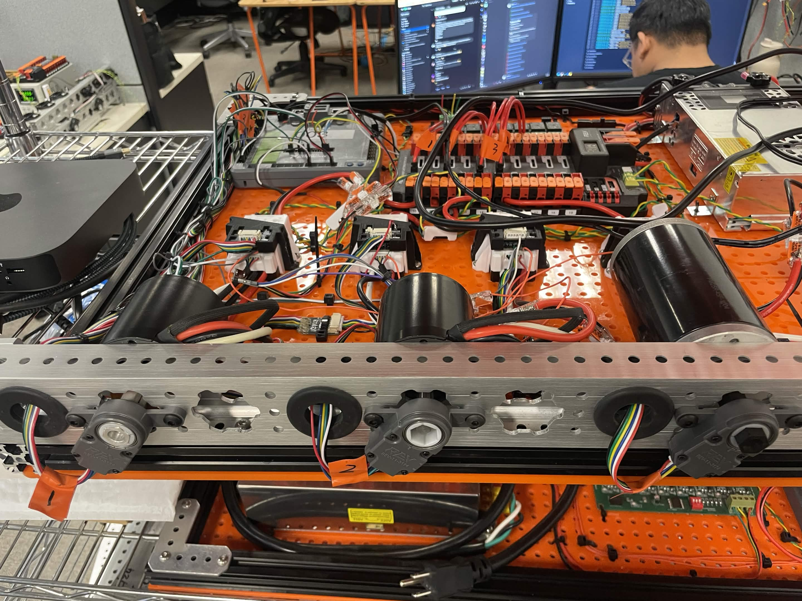
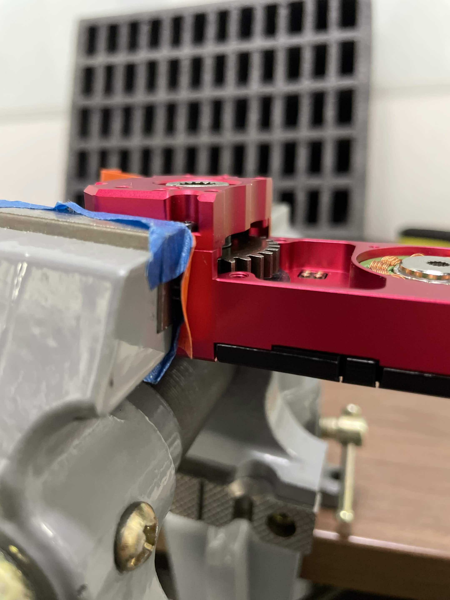
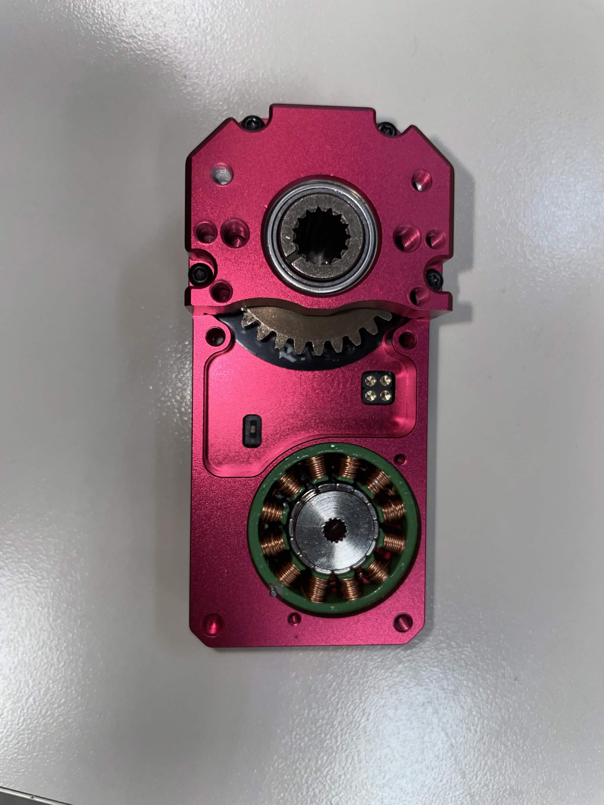
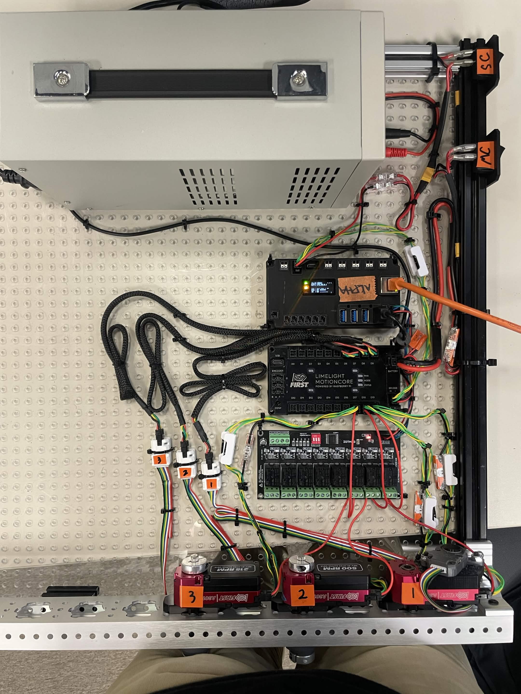

← All projects
Software · REV Robotics
REV HIL Tester.
A multithreaded 154-test hardware-in-the-loop system for the A301 motor.

REV Robotics · Hardware-in-the-loop · Java · Python · GitHub Actions · Proxmox
The test system
I designed a multithreaded 154-test hardware-in-the-loop tester for the REV Robotics A301 motor. The setup integrates three motors, a SystemCore, through-bore encoders, CAN encoder adapters, a power supply, and a MotionCore expansion board.
Automation and performance
- Built a GitHub Actions CI pipeline across three repositories using a self-hosted Proxmox virtual machine to compile, run, and report test results.
- Reduced memory-write time from 15 ms to 5 ms and cut test-suite runtime by one minute.
- Created a Java production-testing application for motor and servo controllers.





